An open shield with three deliberate bars for coverage and clarity.
Two opposing brackets connect risk and capital.
A structural E with a rising silhouette and a dependable base.

Two flowing forms meet in one compact mark.
